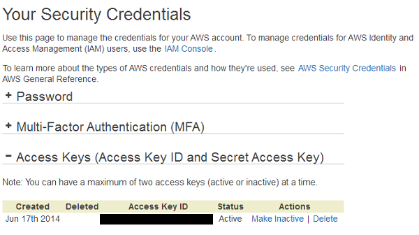
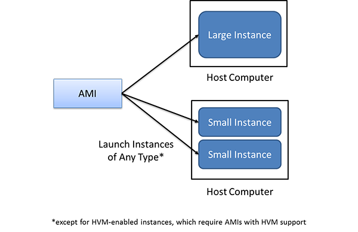
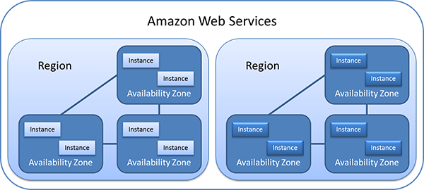
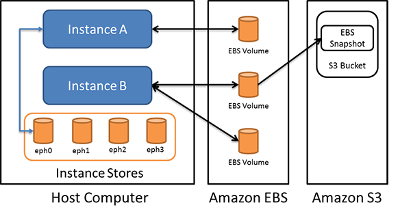
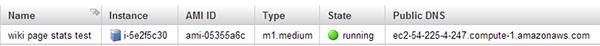
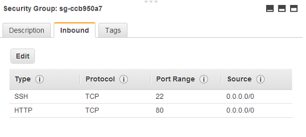
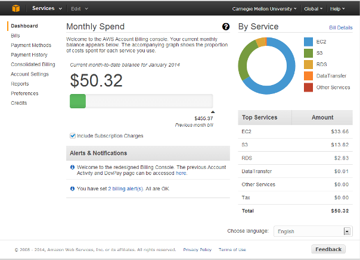
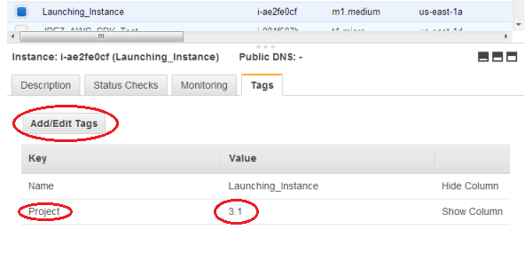
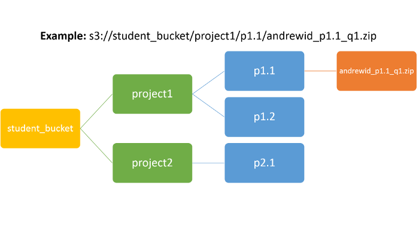

Project Primer
| Phase | Open | Deadline |
|---|---|---|
| Project Primer | Jan. 12, 2015 00:01 | Jan. 18, 2015 23:59 |
Overview
In this course, you will be working with various cloud resources that will be provisioned on-demand, and accessed remotely through SSH or putty. While Amazon Web Services supports both linux and windows instances, we will primarily be using linux-based instances, most of which run some version of Ubuntu or Red Hat (Cloud guest). Therefore, before getting into the projects, we have assembled a simple primer to get you started on some of the various fundamental concepts and skills which will help you tremendously in tackling the various projects in this course.
Warning
Failure to comply with these instructions may result in points being deducted from your project grade.
Essential Skills in Linux
Scripting
In this course, we will primarily be working within Amazon EC2 instances (also known as virtual machines). Typically we would interact with these instances through the command line interface (usually bash on linux instances). In order to perform and/or automate more complex tasks using the command line, a good knowledge of scripting languages and techniques (bash/perl/python etc.) is required. If you would like to learn scripting or refresh your knowledge, we would highly recommend the following tutorials:
- The Advanced Bash Scripting Guide
- If you prefer Perl, there are many guides at the Perl website
- If you prefer Python, there are also many resources, you can get started with the resources at the Python website
You will need to focus on the following topics:
- Scripting syntax, local variables and environment variables.
- Quoting and back-ticks in
bash. - Input and Output redirection using unix pipes.
- Using tools such as
grep,awk,sed,cutetc. to perform simple text manipulation inline or within bash scripts. (if you are using perl or python, you should be able to do this within the perl or python script itself)
Installing Software
As you are working on the various projects in this course, we will supply you with a task-specific Amazon Machine Image (AMI) which contains most of the necessary software, tools and data for you to complete the specified task. In any case, you should also know the commands necessary to install software on these instances on your own. We will mainly be working with Ubuntu-based instances in this course, so you should familiarize yourself with the workings of the Advanced Packaging Tool (APT), using the command apt-get. apt-get lets you install software packages on Ubuntu and other Debian-based linux environments.
apt-get is invoked using the following command:
sudo apt-get install <package-name>
For example, to install GNU emacs on an Ubuntu machine:
sudo apt-get install emacs
To install vim:
sudo apt-get install vim
Installing Software on Red-Hat based distros
The equivalent command to install software on red-hat based Linux distros (Fedora,CentOS etc.) is:
sudo yum install <package-name>
We use the sudo to execute apt-get commands because this requires root access to install packages in the system.
In addition here are some useful apt-get commands:
sudo apt-get update will update the package index from their sources. This is typically used to
refresh the package index with the latest packages and their versions.
sudo apt-get upgrade will update all the existing packages on the system with their latest versions.
SSH
Secure Shell (SSH) is a network protocol used for secure data communication, remote login and remote command execution. You should be quite familiar with SSH already, but there are some quirks to using SSH with EC2 instances, which are covered below.
In order to get SSH working with an instance on EC2, you must ensure that the SSH clients and servers are installed correctly, that the instance's security group allows incoming connections on port 22, and your authentication mechanism is working correctly.

Connecting to AWS EC2 Instances through SSH
Setting up SSHD (If not installed already)
All EC2 images come with an ssh daemon (openssh) pre-installed. In case you have a fresh linux install on your own machine, please follow the steps below to install and configure openssh:
sudo apt-get install openssh-server
Configuration settings for ssh are on /etc/ssh/sshd.config
Depending on your version of Ubuntu, sshd can be managed either using init.d:
sudo /etc/init.d/ssh
or by using service:
sudo service sshd [start|stop|restart]
Authentication Mechanisms
SSH supports a number of authentication mechanisms. You might be most familiar with password authentication (where you enter a username/password when connecting to a remote machine). Password authentication security is based on the length and complexity of the password, and is prone to brute-force or dictionary-based attacks. This is especially dangerous on a publicly-accessible EC2 instance.
To plug the vulnerability and to increase security, all EC2 instances are configured to use “key-based” authentication instead. This is based on Public Key cryptography. A key pair consists of two keys: one private and one public. The public and private keys are mathematically linked; they are generated using algorithms such as RSA or DSA. However, from the knowledge of only one of the keys (only private or only public), it is either impossible or very expensive to calculate the other key.
You can also generate your own key pair. In Linux, ssh key pairs are typically stored in the ~/.ssh directory. We recommend using this directory as it has the correct permissions (read-write for user and no permissions for anyone else - 700). The following commands can be used to generate a key-pair in Linux:
ssh -i private_key_file.pem some-instance.ec2.amazonaws.com 'uname –a'
This will execute the command uname -a on the remote instance some-instance.ec2.amazonaws.com. This is especially useful to run commands on many remote instances in a script, for example.
Troubleshooting SSH Problems
If you receive a permission-denied error when trying to connect to an EC2 instance, verify that you are using the private key to connect. In addition, verify that your private key files have unix permissions 600 and the directory containing the key is 700.
Remote Screen Management (byobu)
When working with remote machines over SSH, the bash (or similar linux shells) are used. These shells work in interactive mode, allowing the user to run commands and launch processes. However, due to network connectivity issues, remote SSH shells can be volatile and bash by default will terminate all launched processes if the session is disconnected. This can be especially frustrating when running long jobs or scripts that get terminated due to a network issue. The nohup command is useful to run a program in the background and continue to run the command even if the session is disconnected.
Another useful tool to manage a remote SSH session is byobu. byobu is a multi-terminal manager application for Linux, similar to screen or tmux. We highly recommend using byobu to keep the state of your remote sessions alive, even if you disconnect from the SSH session. You can install byobu on your instance if it's not already present.
Launch byobu by running the command byobu. This will launch a new shell session in your instance. You should see a screen similar to the image below. You can create multiple shell sessions by pressing F2. To toggle between shell sessions, press F3/F4. To disconnect from byobu (and keep the shells alive), press F6. To terminate a shell session, simply exit the shell.
Byobu Screenshot
Disk Operations in Linux
In this section, we will cover some of the important commands to perform various types of disk operations in linux. This will come in handy when dealing with the various types of virtual storage options available for Amazon EC2, such as Amazon’s Elastic Block Store (EBS).
Managing Partitions
A number of applications can be used to manage disk partitions in linux,
including parted and fdisk. fdisk is the traditional partition management
software but it has been largely replaced by parted as it has support for
GUID Partition Tables (GPT) and drives that are larger than 2 TB.
For the purposes of this tutorial, we will be using parted.
To list all of the partitions on the system:
parted -l
Partitions will be listed in order as devices under /dev. On Amazon EC2 instances, the devices are /dev/xvd**.
/dev/xvda1 is the OS partition, while /dev/xvdb is the instance store partitions.
Please note that RAMDISKs will not show in the output of parted.
parted can also be used to create partitions and set the partition type or
file system of each partition (Linux has a variety of file systems available, ext4 is commonly used nowadays):
parted /dev/xvdX mklabel gpt
parted /dev/xvdX mkpart db ext4 0% 10G
Can be used to label a device as using the GUID Partition Table (GPT) and label a 10 GB partition on the device to use the ext4 file system. This partition is now available to format with the file system specified.
In addition, parted can be run on its own without any parameters to start it in interactive mode.
Once a partition has been created using parted, you can format it using the mkfs command:
mkfs.ext4 /dev/xvdX1
Mounting Volumes
In order to finally use a disk after partitioning and formatting, it must be mounted
to some mount-point on the linux virtual file system. Typically mount points in linux
are created under the directory /mnt or /mount. Removable media such as
USB/CDROM etc. are mounted under /media. You are free to mount these
partitions in any directory you like.
mkdir /storage/mountpoint mount /dev/yourdevice /storage/mountpoint
Tasks to try:
You should sharpen your linux skills by writing simple program and exercises involving
grep and awk in bash or use your favourite scripting language. Our suggestions are the
following:
- You can try some of the exercises in the advanced bash scripting guide.
- Try to process a large text file to filter out a certain string using regular expressions.
- Learn to keep a remote SSH session alive using
byobu,screenortmux.
Amazon Web Services
Amazon Web Services (AWS) is by far the most popular cloud computing provider and is widely credited with the introduction of innovative concepts in cloud computing. AWS offers various services such as Amazon Simple Storage Service (S3) and Amazon Compute Cloud (EC2). For the projects in this course, you will work on instances provisioned on Amazon EC2 and utilize S3 for persistent storage. In addition, we will be working with various other AWS technologies such as Elastic Block Store (EBS), CloudWatch, and DynamoDB, among others. For more information about AWS, please refer to the AWS website.
Video: Introduction to AWS
AWS Authentication
Apart from your AWS account username/password, API access to various AWS services can be granted using the AWS Access Key ID and AWS Secret Key pair. These are unique credentials that can be generated by the user and used within scripts and programs that interact with AWS services.
To generate an Access key ID and Secret Key pair, sign into your AWS account. Once you have signed in, choose Security Credentials from the drop-down menu on the top right corner. Under Access Keys click on Create a new Access Key and note down the Access Key ID and the Secret Access Key. If you ever need to refer to these keys in the future, simply visit the Security Credentials page to access them.
Security Credentials in AWS
AWS Management Console
The following video will provide a short overview of AWS:
Video: AWS Management Console
Elastic Compute Cloud (EC2)
Amazon Elastic Compute Cloud (Amazon EC2) is a service in AWS that provides resizable computing capacity in the AWS cloud. Amazon EC2 makes virtual servers (also known as instances) available to you as a service, thereby eliminating your need to invest in hardware up front and enabling you to develop and deploy applications faster. You can use the web service interfaces or API calls to launch as many or as few instances as you need, configure security and networking, and manage storage.
As you get started with Amazon EC2, you should understand some of the key concepts of the environment as they are a bit different from your own. The following video outlines some of the basic concepts and ideas behind EC2:
Video: EC2 Basics
EC2 Terminology
Some terms and concepts that you should know follow:
EC2 Instance: EC2 instances are virtual servers that you can configure and launch on Amazon EC2. It can be thought of as a copy of an Amazon Machine Image (AMI) that is actively running on the Amazon EC2 cloud. Instances run on host computers at Amazon’s data center, but this is typically transparent to the user. Instances have many parameters including:
Amazon Machine Image (AMI): Is a template that contains a complete software image (operating system, applications, libraries and data). From an AMI, you launch instances, which are copies of the AMI running as virtual servers in the cloud. You can launch multiple instances of an AMI.
Amazon Machine Image (AMI)
Instance Type: Amazon offers different instance types which have varying amounts of compute and storage available to them. They range from t1.micro to cc2.8xlarge and have different on-demand/reserved and spot prices.
Regions and Availability Zones: Instances can be launched across various AWS regions, which are distributed geographically (Virginia/Singapore etc.). Each region has a number of availability zones, which are distinct locations within a data center and are engineered to be isolated from other availability zones in the same region. This allows users to spawn instances in the same region but across availability zones and protect applications from the failure of a single location.
AWS Regions
Pricing: Instances can be launched using three different pricing models: The on-demand pricing is a fixed hourly rate that you pay for the instance. It can range from a few cents to a few dollars per hour depending on the instance type. If you want to use an instance for a fixed amount of time, you can purchase reserved instances (which are typically calculated yearly). In addition there are spot instances which are described below:
Spot Instances: Spot instances are special instances which allow users to bid for unused computing capacity. You can specify an hourly rate that you are willing to pay to use an instance. In addition, for each instance type under each availability zone, Amazon maintains a spot price which reflects the current demand for the instance. If your bidding price is more than the spot price, an instance will be launched at the current spot price and will continue to run until the spot price exceeds the bid price. Spot instances are volatile but very useful for getting instances for a few hours at prices that are typically lower than the on-demand prices.
Amazon EC2 Storage
Amazon offers multiple options for storage on EC2 instances:
Storage options for EC2 instances
Amazon EC2 Instance Store: Instance stores are storage volumes that are present on the host computer that the instances are running on. Instance stores are temporary, block level storage. Instance store data is cleared when an instance is stopped or terminated.
Amazon Elastic Block Store (EBS): EBS is a SAN-style storage system that can be used with EC2 instances. EBS presents volumes to the user that can be created independently of an instance and attached to instances as needed. EBS volumes are persistent and flexible. Multiple EBS volumes can be attached to an instance, and an EBS volume can be detached from an instance and attached to another. EBS incurs additional charges (GB/month) over and above EC2 instance charges. EBS volumes can also be backed up by creating a snapshot, which is stored in Amazon S3.
Amazon Simple Storage Service (S3): Amazon S3 is an object storage service which has a web services interface to store and retrieve data. Amazon S3 is used to store snapshots of EBS volumes.
Launching and connecting to your instance
The following video will cover the procedures required to launch an EC2 instance:
Video: Launching an EC2 Instance
To launch an instance, simply use the AWS Management Console to go to the EC2 Dashboard. From there, click on Instances and Launch Instance. You can choose the classic wizard and specify an AMI, Instance Type, region and availability zone, as well as storage options and select a key pair so to connect to your instance.
Once you have completed configuring your instance, you can see your instance listed in the Dashboard, and you should be able to see its state momentarily being shown as “pending”.
Once the instance has been launched, the state should change to running, with a Public DNS address being assigned to it:
Instance launched on EC2
You can now connect to this instance over SSH. The following video should show you how to connect to an EC2 intsance:
Video: Connecting to an EC2 Instance
To recap, the command in linux to connect to an instance is:
ssh -i key_file.pem username@ec2-50-19-54-72-compute-1.amazonaws.com
Tip
If you are planning to use PuTTY in Windows, you will need to convert the PEM key into PPK format using the PuTTYgen program and specify it as the key when connecting to your instance.
We would also like to highly recommend XShell, an advanced Terminal software which is free for Home and School use. You can directly import PEM keys into XShell for use with your SSH sessions.
Managing Security Groups
Instances launched on EC2 have are publically accessible using their Public DNS address. In order to better secure instances, EC2 opens only port 22 by default. This is controlled using Security Group definitions in the EC2 Dashboard. You can configure Inbound and Outbound ports and destinations.
EC2 Security Groups
Tasks to try:
You should get comfortable doing the following tasks:
- Configure and launch a
t2.microEC2 Instance using either the Ubuntu or Amazon Linux AMIs. - Connect to the EC2 Instance using SSH from your computer.
- SFTP/SCP a small file from your computer to the EC2 instance and vice-versa.
- Use any text editor on the instance to create a small script or program (such as a bash or python script) and run it on the instance. This program
could simply echo a string to
stdoutor filter words from an input text file. - Attach, format and mount an EBS device to this running EC2 instance.
- Terminate the EC2 instance when done.
Simple Storage Service (S3)
Amazon S3 provides a simple web services interface that can be used to store and retrieve any amount of data, at any time, from anywhere on the web. Amazon S3 provides interfaces to write, read, and delete files (also known as objects in Amazon’s parlance) of sizes 1 byte to 5 terabytes of data each. The number of objects that you can store is unlimited. Each object is stored in a bucket and retrieved via a unique, developer-assigned key.
When working with S3, one logical difference compared to a traditional file system is that S3 does not have the notion of folders or subfolders. The only logical container is a bucket, but files (objects) can have names with / which can be used to preserve the hierarchy of existing files when uploading and downloading. The following video provides an overview of S3:
Amazon S3
Working with S3
The following video will introduce and demonstrate S3 functionality both through the AWS Console as well as through s3cmd:
Amazon S3 Usage
Using the AWS Management Console, you can visit the S3 Management Console, which gives you an interface to create and manage buckets and files.
When you create a bucket on S3, you must specify a bucket name that is unique among all the buckets currently in S3 (similar to choosing a username for web portal). The S3 bucket namespace is shared by all users of the system. There are also some restrictions on bucket names.
Any object stored on S3 is also accessible via HTTP.
You should be able to access your bucket from a browser
using the URL: http://s3.amazonaws.com/<bucket-name>/object
Please note that you will need the appropriate permissions
enabled for your bucket and object to allow for anonymous HTTP access.
From the command line s3cmd is a very useful open-source tool that provides command-line access to much of the Amazon S3 API functions. Using s3cmd, you can create, destroy and list buckets, as well as upload and download files to buckets, apart from other functionalities. Follow the steps below to install and configure s3cmd:
- If not installed already, you can install s3cmd on most Ubuntu
AMIs using the command
sudo apt-get install s3cmd -
Configure the s3cmd tool:
s3cmd --configure - Enter your access key and secret key information (You can visit Security Credentials within your AWS Account to obtain these).
- Configure the tool using default options.
- Test the access to S3 using your supplied credentials when asked to do so, and choose Y to save your configuration.
- When asked, choose to save the configuration options, so that you don't have to set it up each time you use s3cmd.
Once you have completed installing s3cmd, try some of the different commands to create buckets, upload and download objects as well as getting and setting permissions of buckets and objects.
Tasks to try:
You should get comfortable doing the following tasks:
- Create a bucket on S3.
- Store and retrieve a small file on S3 using both the web interface and the command-line tool
s3cmd. - Set permissions to be able to access an object on S3 using an HTTP link.
Project Logistics
Projects are assigned by the course instructor and will be announced in Recitations/Piazza. Students are expected to follow the announcements carefully with regards to opening/closing dates.
With projects, we highly recommend starting early. With each project, there is a new skill that you will have to pick up and master before you begin. Many of the project modules involve working with significant amounts of data, processing may require multiple hours. Some projects require finding an optimal resource configuration, and may require multiple test runs before you can arrive at a solution. You will need to account for this overhead as you plan for your project.
Using Cloud Resources
AWS is a large-scale, shared cloud resource that is used by millions of users around the world. This differs significantly from the computing resources that you have been using at the university.
AWS provides fairly robust uptime guarantees for most of its services but it is not immune to failures. Students should keep this in mind as they work their projects. In case of major service issues, the instructor may grant extensions, but only if it affects a majority of the users. Students should be prepared to work around service failures.
Spot Instances
Spot instances, as discussed in the previous pages, offer significant cost savings to regular on-demand instances, especially for more powerful instance types. Students should use Spot instances whenever possible, except for services that need to be kept alive for instructor assessment. For example, in the later projects, you will be expected to keep a web interface alive for the instructors to visit and assess your work. Using spot instances for such tasks is not recommended as your instances could be terminated due to price fluctuations.
Project Assessments
On several of your projects this semester, you will be using an AMI developed by the Cloud Computing team. This AMI will contain all the data you require to complete the project as well as submit your answers to our autograding system. The AMI will in most cases consist of 2 files:
runner.shsubmtter
runner.sh is a bash script which contains one function for each question in that project. You will fill in these functions and run runner.sh to verify your answers. You may then use submitter to submit your answers to the autograding system. Since this is an autograded system, please follow the instructions as closely as possible
The project autograders will be used to score your submissions, so please follow the project instructions carefully. Students will be required to complete these activities before they are due. Always double-check the answers in your project submission before choosing to submit. The answers you submit in your checkpoints will be deemed as final.
In addition, students will be required to submit their code in a designated location when instructed. For such projects, a significant portion of the grade for that project will be allotted for your code submission. Code will be assessed on the following:
- Completion of the tasks mentioned.
- Efficiency/Performance.
- Code style/readability/comments.
Managing Costs
Students must use AWS resources judiciously. Several projects have cost restrictions which students must follow to the letter and spirit. Students will be held accountable for excessive usage of AWS resources. Students will be expected to monitor their AWS usage and will be responsible for terminating their resources upon the completion of a project checkpoint, unless specifically instructed to do otherwise. The AWS Account Activity page offers students a break-down of their costs and offers daily billing information as shown in the image below:
The AWS Account Activity Page
Tagging AWS Resources
AWS Resources such as EC2 Instances, S3 Buckets, etc. can be tagged using key-value pairs. For every Project checkpoint, you will have to tag your resources to indicate that they were provisioned to complete a particular project. For EC2 Instances, you will be provided an option to tag the instance while it's being configured. You may also tag instances and resources after they have been launched from the EC2 Dashboard as shown in the figure below:
Tagging an Instance on EC2
Resource Tagging is mandatory. All billable resources should be Tagged with the number of the project you are currently working on. These will be defined in each project write-up. For example, if you are working on Project 1.1, use the following tag for all your resources associated with Project 1.1:
| Tag | Value |
|---|---|
| Project | 1.1 |
Tagging Spot Instances
Please be aware that spot instance requests and spot instance creation are two separate events. You can apply a tag to the spot instance request in AWS, but it will not propagate to the instance when the spot request is satisfied. Therefore, you must tag the instance separately once it has been launched. Students are encouraged to find novel ways to use AWS APIs to automate this process, if they like.
S3 Submissions
Some of the project checkpoints in the course may require you to submit code or data on S3. Please follow the instructions below carefully for each submission:
Please set up a project submission bucket on S3 by following the instructions in Amazon S3 section. Once you have chosen a bucket name, create the following folder structure for each of the Projects within it:
S3 Bucket Structure
Setting Bucket Permissions
The instructors and TAs will need access to your project submission bucket in order to evaluate your submission. In order to grant access, please do the following:
- Select bucket and select properties/permissions
- Select Add/Edit bucket policy
-
Paste the following string into the bucket policy, replacing
mybucketwith the name of your bucket{ "Version": "2008-10-17", "Statement": [ { "Sid": "", "Effect": "Allow", "Principal": { "AWS": [ "arn:aws:iam::939223853384:role/s3HandIn", "arn:aws:iam::939223853384:root" ] }, "Action": [ "s3:ListBucketVersions", "s3:GetObjectVersionTorrent", "s3:GetObjectAcl", "s3:GetBucketRequestPayment", "s3:GetObjectTorrent", "s3:ListBucket", "s3:GetObject", "s3:GetBucketPolicy", "s3:GetBucketVersioning", "s3:GetObjectVersionAcl", "s3:GetBucketNotification", "s3:GetBucketAcl", "s3:GetObjectVersion", "s3:ListBucketMultipartUploads", "s3:GetLifecycleConfiguration", "s3:ListMultipartUploadParts", "s3:GetBucketLocation", "s3:GetBucketWebsite" ], "Resource": [ "arn:aws:s3:::mybucket", "arn:aws:s3:::mybucket/*" ] } ] } - During each project submission, please visit the S3 Link Checker to verify that your submission is valid on S3.
Tasks to try:
You should get comfortable doing the following tasks:
- Monitor your AWS usage periodically using the web Console.
- Set up a bucket for any S3 submissions you may encounter in the course.
- Learn to tag any and all resources on AWS.